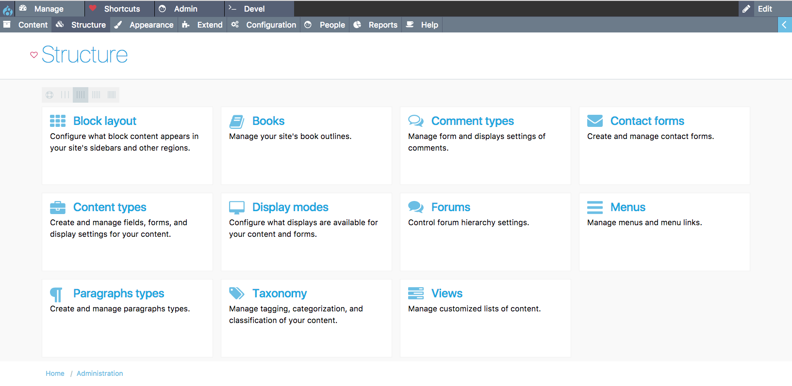
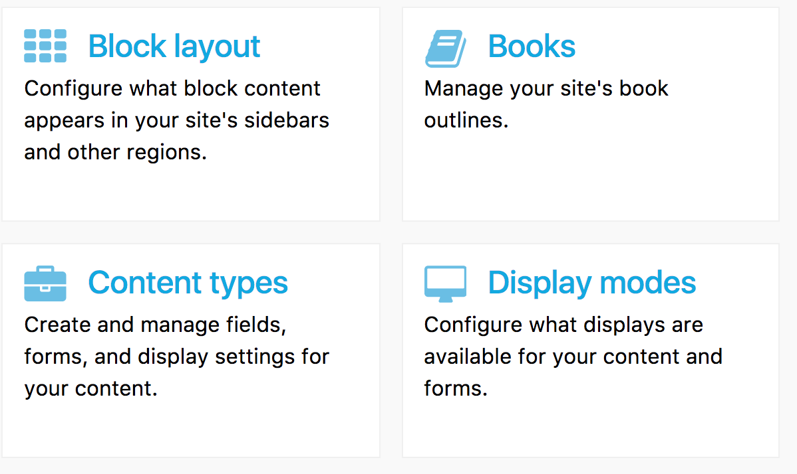
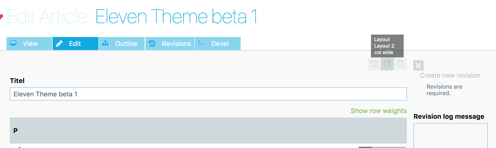
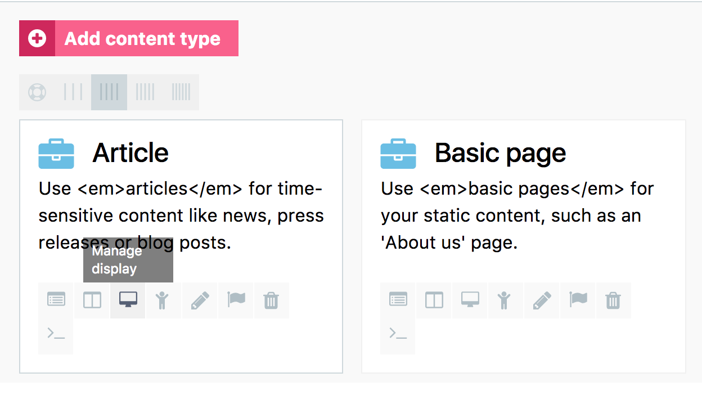
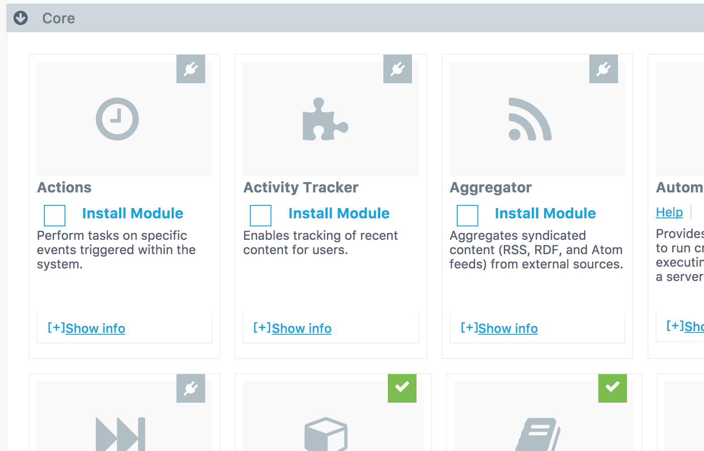
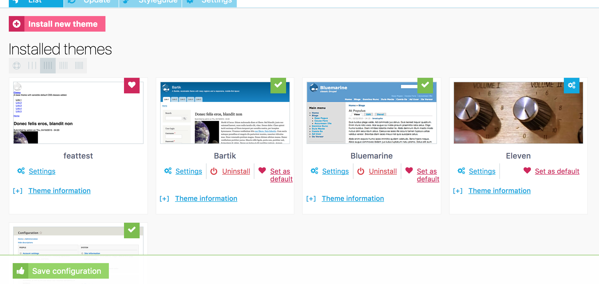
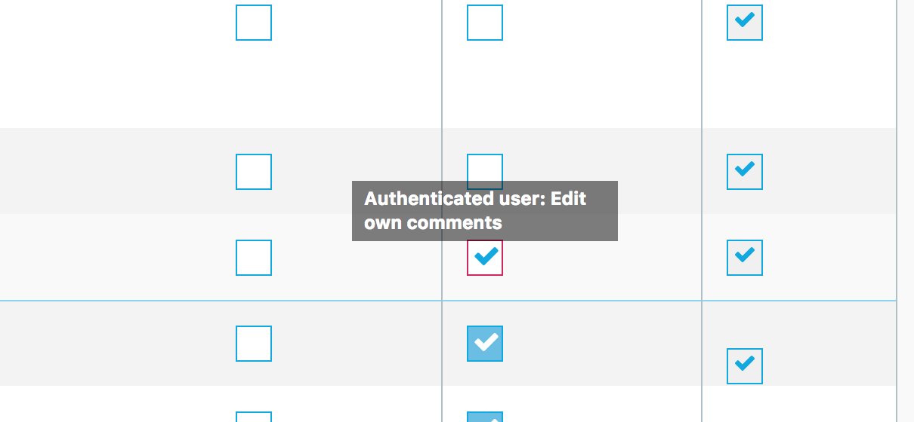

the Drupal 8 admin theme

download
drupal.org
github
Eleven Features
Icons
An admin theme dont have to be dull + the rest of the world use icons
Moderen UI
All the table listings have been removed for a modern card approach
Colors
Theres more than one tone of Drupal blue in the world
Pretty
Drupal should be as pretty on the outside as the inside
Build on core
Build on Drupal8 core classy theme - No need to install 3rd part modules
Basetheme
Build as a basetheme
Free and open Source
Do with Eleven as you want - turn it up to 12 ... ,)
Supported
Eleven theme is supported by Theme machine (formerly geek royale)
Browsers
Developing eleven theme for modern browsers - Looking forward not back
No drop buttons
Less clicking more awesome
twig, css & js
11t is developer as close to drupal core as possible - so no need for preprocessors or anything else
screenshots
cards

All boring table overviews are now cards with an individual identity
Edit content

Slick modifications for easier editing the content
content types

Contenttype interface have been redesigned
content filter
Free up some space on the content admin screen
Modules

Modules page completely redesigned.
Themes

Theme page completely redesigned
Permissions

all tables are now cards instead with individual identity
Presentation
mortendk's presentation at DrupalCon baltimore 2017
explaining and presenting the concepts behind Eleven theme